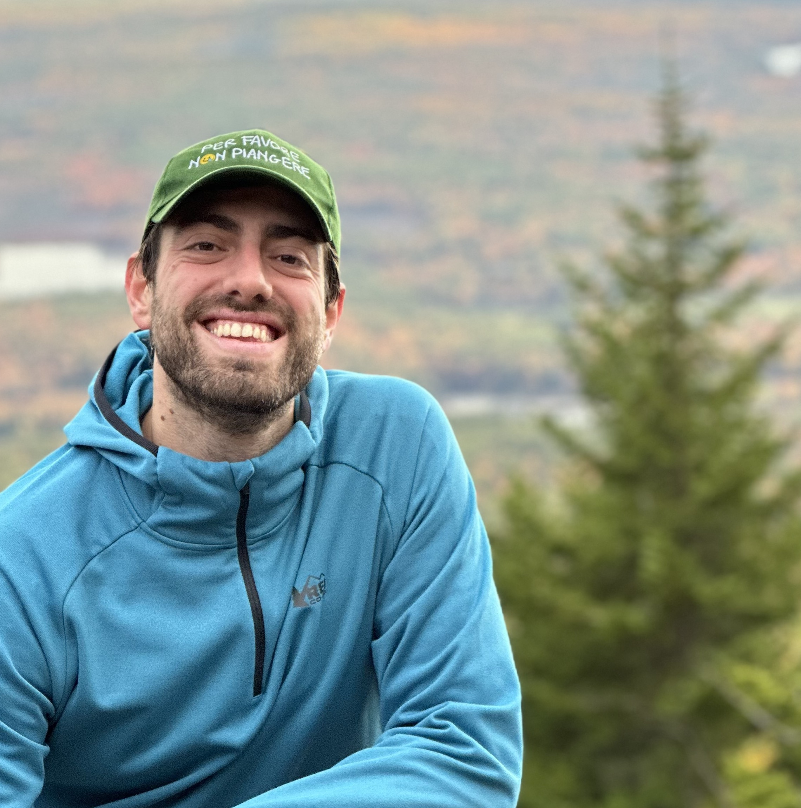

Starting January 2027, I will be a Research Fellow in the Center for Computational Mathematics at the Flatiron Institute.
I am a visiting researcher at Stanford, working with Emily Fox and Emma Lundberg on uncertainty quantification and experimental design for biological applications. As part of this collaboration, I am spending this summer at Microsoft Research, working with Eric Horvitz and Bruce Wittmann.
I completed my PhD at MIT in spring 2026, working in LIDS with Tamara Broderick. My thesis developed probabilistic machine learning methods for spatiotemporal data that embed physical and biological structure into their design, in close collaboration with domain scientists including oceanographers, biologists, and atmospheric chemists. During my PhD I was lucky to spend some time at the Flatiron Institute, as well as in the Health AI team at Apple.
Before joining MIT, I completed a master's in data science at Bocconi University advised by Igor Prünster, and a bachelor in economics and computer science advised by Massimo Marinacci.
Outside of work, I enjoy running, biking, being in the mountains, and cooking for friends. I am also very passionate about having an active role in the communities I am part of, and have previously served as co-president of the MIT EECS Graduate Students’ Association.